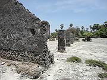
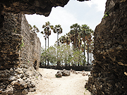

デルフト島・馬小屋跡 |
「Until I came to Sri Lanka, I did not know much about Sri Lanka. What I knew was that it is located in the Indian Ocean, like a tear drop of India, and a war-torn country, because of the three-decade-long civil war between majority Sinhalese and minority Tamil. However, now I have realized albeit gradually, how marvelous this country is in terms of its diversity. Sri Lanka is a multi-ethnic, multi-religious, and multi-lingual country, although it is a small island which is smaller than Hokkaido. Majority of the people are Sinhalese, but those people consist of Buddhists and Christians. Large numbers of the minority Tamil ethnic group believe in Hinduism, and some believe in Christianity and very few believe in Buddhism.
|
Moreover there is Muslim community. Those Muslims are descendants of Muslim traders from the Middle East, Malaysia, Indonesia, etc. Even now, many Muslims are business people, and they wield power and influence in large cities, for example both the mayor and vice mayor of Colombo are Muslims. To my surprise, there are several groups, such as indigenous people, African descendants who were brought by the colonial power, and Gypsies who were from India. In addition, there is one more group called Burgher. Those are mixed people with Sri Lankan and Dutch. Most of them are city dwellers and Christians. Within Tamils, there are several groups, such as Jaffna Tamil, Trinco & Manner Tamil, and Indian Tamil who were brought from India by British as plantation workers. Indian Tamils have been considered inferior by other Tamils.
During the British colonial era, British introduced good education system based on English language especially in Jaffna area. The British colonial power favored minority Tamils in their offices. This “divide and rule policy” is notorious and ubiquitous, and has often caused severe conflicts. One country that has been a victim of this “divide and rule policy” by European colonial power is Rwanda, although the culprit this time is not Britain but Belgium. So among doctors, engineers, accountants and so on, there were many educated Tamils. My homestay father is a retired Navy officer. He said that half of his colleagues were Tamils, although they are minority. However, after Sri Lanka obtained independence in 1948, the first post independent government established new education system based on Sinhala language and in 1956, it declared Sinhala as the official language. Since which is the official language for new Sri Lanka has been a controversial issue, among Tamils discontent started simmering gradually. In 1983, Tamil insurgent group killed 13 national army soldiers. This triggered serious riot in several major cities, such as Colombo, Kandy and Anuradhapura. Sinhala mobs attacked Tamil shops and looted and burned them down in retaliation. This incident is called “Black July” and it was the start of the long bloody civil war. My homestay mother’s family used to live in Anuradhapura and they had a good relationship with Tamils, so her father had offered a refuge to Tamil friends.
When I travelled to Jaffna area (northern part, Tamil Tigers’ foothold), I saw countless abandoned houses. Most of Tamil owners of those houses have sought political asylum in Canada, Australia, Norway, Denmark, Sweden, the UK, the USA etc. Those people were able to take advantage of their refugee status, therefore, expatriate Sri Lankans are mostly Tamils and vocal expatriates put pressure on the international society to support them. As a result, foreign governments and NGOs tend to take sides with Tamils. Now those expatriates have established footholds in many foreign countries and they are becoming wealthy. Once my homestay family was invited by those wealthy Tamils who were offered a refuge in Anuradhapura and now are living in the UK, I heard. Still now, Japanese Foreign Ministry has warned us not to visit this northern area, but I really wanted to visit there. One of the reasons why I chose Sri Lanka as a destination is I wanted to understand the real reason of the civil war. While travelling, I often encountered army check points. Presence of the military was conspicuous. Sometimes I saw the wreckage of battle tanks and warnings of landmine along the road. Jaffna used to be the second largest city, but now it is the third largest city, bypassed by Kandy. Gradually people have returned to this area, so within several years, it will surely change drastically.
Now, it’s time to explain Sri Lanka’s climate. Roughly speaking, it can be divided into three parts. Its south-west area is a wet-zone and densely populated and highly developed. The former capital, Colombo is located in the wet zone, and my homestay family lives in the outskirts of Colombo. During the whole year, temperature remains unchanged from 26 to 30 degrees centigrade. Therefore, every house is designed for a good ventilation, utilizing high ceiling, glassless pelmet, etc. On the contrary, north-central area came under a dry zone. So successive kings in the past concerned about water supply and built numerous artificial lakes named “tank”. Their engineering technique is miraculous! When I visited one of the eight World Heritages in Sri Lanka, Sigiriya, I was quite amazed. One of the kings built his palace on the top of a gigantic rock. In a dense jungle, a rectangle rock rises precipitously. When I saw it, I wondered how to climb this rock. But using many steps and artificial footholds, I was able to reach the top. How were they able to build this isolated palace in the 5th century? Due to the dry climate, vast land is barren except some fields which are supplied water by irrigation.
Another part which is worth to mention is Nuwara Eliya. This is located at the center of Sri Lanka. This part is a high land which is located 2000 meters above sea level. When I stayed at Nuwara Eliya, I couldn’t believe I was in Sri Lanka, which is located near the equator. In the morning and evening, I need to wear a long sleeve shirt or sweater, and without a blanket, I couldn’t sleep. It reminded me of November in Japan. So this area is called “Little England” and British developed tea plantation using Indian Tamils. Every morning, I saw mist which created an air of fantasy. I visited famous national park, called Horton Plains, or World’s End. The World’s End was exactly a world’s end. It is a rock cliff rises sheer from the bottom. When I peeped from the edge into the bottom, I saw a small village and winding roads like miniature toys. Taking a walk in Horton Plains was a nice hiking experience, but due to torrential rains, soil on the road was eroded and road has become like a river bed with hard rocks.
In the dry zone, it rains mostly in October, November and December, and in other nine months it doesn’t rain. In the wet zone, after May, showery weather has come. This year, at night, I often heard the crack of heavy shower, but it continues for short period. In the dry zone, due to lack of rain, people had often suffered from drought, so kings built countless tanks, but now lot of sedimentary deposit have made these tanks very shallow, Therefore, recently the government have decided to dredge these tanks which had dried up during the drought to enhance their capacity to retain water. Especially this year, due to lack of water, hydroelectric power plants are in trouble, so people undergo power cut for two or three hours a day.
Every morning, I woke up to the voice of sutra from near temple around 5:00. At first, I thought it was the Koran, because I couldn’t understand the meaning and I had the similar experience in Sanaa, the capital city of Yemen. But gradually I realized that it was not the Koran, it was Buddhism sutra. In my impression, 98 % of Sri Lankans are religious, they believe in some religion whatever they choose. I stayed with a Sinhalese family, the area which I stayed is dominated by Buddhists. For every Buddhist, the full moon day, which is called “Poya day” is very important. On that day, people go to temple to attend the Buddhist rituals. With my homestay mother, I did just like all the other Buddhists.
After the civil war, the government is eager to introduce dual language education system to public schools. To put it concretely, Sinhala students learn Sinhala language as their first language and learn Tamil language as the second language and vice versa. To unite this diverse country, dual language education is necessary. However, affluent people want to send their children to international schools which are based on English education, because many parents’ dream is sending their children abroad in the future. Given that the mother tongue is a basic part of our identity, I’m worried about these children’s future. Moreover, if once these children migrate to wealthy countries, they may never come back to Sri Lanka. If so, old parents will be left behind. In Japan, we face similar problems, because once educated children leave their home towns in rural areas to seek better lives in the cities, they don’t come back to their home towns, but the scale is quite different.
While I’ve been in Sri Lanka for four weeks, I travelled three times. I visited the four World Heritages, such as Dambulla, Polonnaruwa, Sigiriya, and Anuradhapura which are all located within so-called cultural triangle. Most of them are ruins of ancient cities, temples and palaces. After that, I went further to the northern part, including Jaffna, spending several days. In Jaffna, I visited huge Hindu temple and Dutch fortress by the ocean. The fortress was also destroyed by civil war, so now it is dismal ruins. Next day, I drove to the port, hoping to visit the Delft Island through a road which was built in a lagoon. At the port, I had to wait about two hours and then I got on board a ship with many local people. Beneath our feet, tons of bags contained construction materials were put tightly. I felt like a refugee. The Delft Island was a tiny bleak island, which didn’t bear the slightest resemblance to genuine Dutch city, Delft. Authentic Delft is a picturesque medieval city, famous for Dutch painter, Vermeer’s work. Driving in an unrefined truck, I went round this island. Since road was very rough and the truck bumped carelessly, I felt like I was riding on an untamed horse. On the Delft Island, there are Navy bases and several tiny fishermen’s hamlets. Due to lack of water, the land has become desert or barren land. Our local driver proudly showed me a reputed well, but when I drank “fresh water”, it tasted a little salty. I visited ruins of stables built by Dutch, a baobab tree transplanted by Dutch from Africa and a strange shaped rock, named “Adam’s foot”. Since the transportation was time-consuming, I spent a whole day to visit only this island.
I took another three-day-trip to visit the central mountainous area, including Kandy, which is also one of World Heritages and an ancient city. And in the last week of my homestay, only this time by train, I visited south-east coastal area. My last destination was Galle. Galle used to be proud of its prosperity as a transfer port for the Ocean Silk Road between Europe and Asia. Galle was built by Dutch and many Muslim traders settled there. So in the old town, which is surrounded by stone walls, there are many churches built by Dutch and British and mosques, so the atmosphere is completely different from other cities. Galle is also one of the World heritages which attract a troop of foreign tourists.
After I returned from Sri Lanka, I have reconfirmed how important language is as part of our identity. So resentment of people who were deprived of their mother tongue would never be healed. One of the reasons why I still hesitate over visiting Korea is that I’m afraid to encounter elderly who are able to speak Japanese fluently.
Ostensibly Sri Lankans look like enjoying the peace, but I don’t know a single Tamil’s feeling, because I missed the chance to interview any Tamils.」 |

デルフト島・オランダが築いた砦跡
|
|